library(tidyverse)6 Data visualisation
“The simple graph has brought more information to the data analyst’s mind than any other device.”
– John Tukey
Data visualization helps transform complex data sets into clear, insightful visuals, such as charts, graphs, maps, and infographics, to make it easier for people to understand, analyze, and interpret patterns, trends, and relationships within the data. By presenting data in a visual format, it allows users to quickly identify outliers and underlying patterns that might not be apparent in raw data alone.
In R itself, there are built-in functions for plotting various plots. Additionally, there are several packages available for plotting in R. Commonly utilised packages include ggplot2, plotly, lattice, and leaflet. ggplot2 and lattice are commonly used for static plots, while packages such as plotly and leaflet are more common for interactive plots.
In this chapter, we going to cover how to create plots using base R and ggplot2. We going to learn the six most basic and commonly used plots in data analysis:
- Barplot
- Histogram
- Boxplot
- Violin plot
- Scatter plot
We going to focus more on the ggplot2 and only cover the basics for base R plotting. ggplot2 is widely used for plotting and visualisation in the R community (Wickham 2016).
6.1 Load packages
Please load a tidyverse package before proceeding to the next section. We do not need to load the ggplot2 package as it is part of the tidyverse meta package.
6.2 Data
In this chapter, we going to utilise ChickWeight a built-in dataset in R. This dataset is about the effect of different diet regimens on the weight of the chicks.
# More info about the ChickWeight data
?ChickWeight
data("ChickWeight")Let’s create a new variable from the Time variable. In this dataset, the weight of the chicks was weighted each day until 21 days.
chick_data <-
ChickWeight %>%
mutate(Time_group = cut(Time, breaks = 3, labels = c("Period 1", "Period 2", "Period 3")))We can check the variables.
str(chick_data)Classes 'nfnGroupedData', 'nfGroupedData', 'groupedData' and 'data.frame': 578 obs. of 5 variables:
$ weight : num 42 51 59 64 76 93 106 125 149 171 ...
$ Time : num 0 2 4 6 8 10 12 14 16 18 ...
$ Chick : Ord.factor w/ 50 levels "18"<"16"<"15"<..: 15 15 15 15 15 15 15 15 15 15 ...
$ Diet : Factor w/ 4 levels "1","2","3","4": 1 1 1 1 1 1 1 1 1 1 ...
$ Time_group: Factor w/ 3 levels "Period 1","Period 2",..: 1 1 1 1 2 2 2 2 3 3 ...The second data we going to use is ToothGrowth. The data is about the effect of vitamin C on tooth growth in guinea pigs.
# More info about the data
?ToothGrowth
data("ToothGrowth")Let’s create a new variable based variable dose.
tooth_data <-
ToothGrowth %>%
mutate(dose_group = case_when(dose == 0.5 ~ "low",
dose == 1 ~ "intermediate",
.default = "high"),
dose_group = as.factor(dose_group))Here, we use case_when() to classify the dose into 3 groups:
- 0.5 as low dose
- 1 as intermediate dose
- 2 as high dose
# Dose variable
table(tooth_data$dose)
0.5 1 2
20 20 20 # Dose group variable
table(tooth_data$dose_group)
high intermediate low
20 20 20 Then, we can check the variable types.
str(tooth_data)'data.frame': 60 obs. of 4 variables:
$ len : num 4.2 11.5 7.3 5.8 6.4 10 11.2 11.2 5.2 7 ...
$ supp : Factor w/ 2 levels "OJ","VC": 2 2 2 2 2 2 2 2 2 2 ...
$ dose : num 0.5 0.5 0.5 0.5 0.5 0.5 0.5 0.5 0.5 0.5 ...
$ dose_group: Factor w/ 3 levels "high","intermediate",..: 3 3 3 3 3 3 3 3 3 3 ...Lastly, the third data that we going to use in this chapter is the cars dataset, another built-in dataset in R. The data is about the speed of the cars and the distances taken by the cars to stop.
# More info about the data
?cars
data("cars")Next, we going to create a new variable, a type of car.
# Set seed for reproducibility
set.seed(123)
# Create a new variable
cars_data <-
cars %>%
mutate(car = sample(c("A", "B", "C"), size = 50, replace = TRUE),
car = as.factor(car))We can check the new variable by using table().
table(cars_data$car)
A B C
16 15 19 Also, we need to check the variable type.
str(cars_data)'data.frame': 50 obs. of 3 variables:
$ speed: num 4 4 7 7 8 9 10 10 10 11 ...
$ dist : num 2 10 4 22 16 10 18 26 34 17 ...
$ car : Factor w/ 3 levels "A","B","C": 3 3 3 2 3 2 2 2 3 1 ...6.3 Barplot
Barplot is utilised when a variable is categorical. Let’s explore the ChickWeight data. To use barplot(), the data should be a matrix.
diet_table <-
chick_data %>%
select(Diet) %>%
table()Next, we can plot the Diet information.
barplot(diet_table)Let’s beautify the plot by setting up a colour, axis label and title. The arguments needed for those are:
col: specifies the colour.xlab: name of the x-axis.ylab: name of the y-axis.main: the title of the barplot.
barplot(diet_table, col = "steelblue",
xlab = "Diet regimen",
ylab = "Number of chicks",
main = "Protein diet regimens received by the chicks")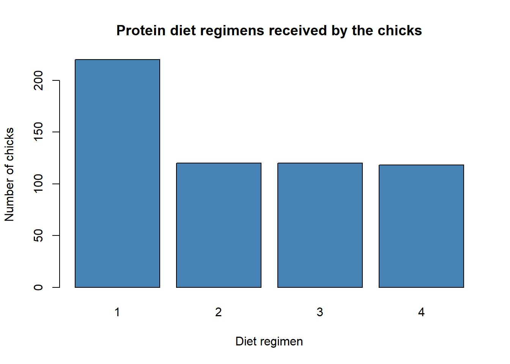
Now, let’s do this in ggplot2. In ggplot2, the R codes are stacked on one over another. ggplot() initialises a ggplot object, and it sort of sets up the canvas for the plot. This part is aaplies to all the plots in ggplot2.
ggplot()
Next, we specify what type of plots that we want. Here, by using geom_bar(), we can see that the x- and y-axis are labelled.
ggplot() +
geom_bar()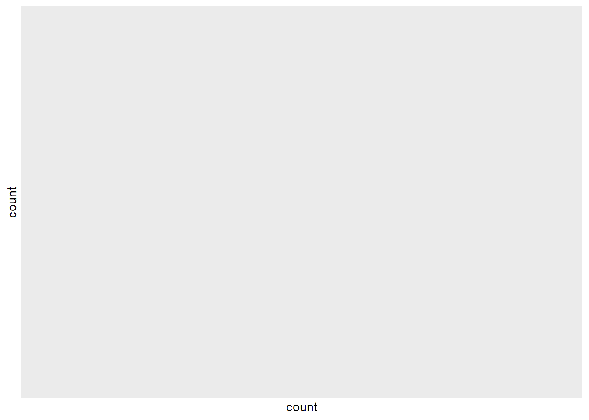
Let’s supply the data for the barplot. The x argument specifies the column on the x-axis that we want to plot.
chick_data %>%
ggplot(aes(x = Diet)) +
geom_bar()We can further beautify the plot by adding colour, labelling the axis, putting a title, and changing the theme of the plot. The arguments needed are:
fill: specifies the colour.x: name of the x-axis.y: name of the y-axis.title: the title of the barplot.theme_bw(): specify the theme of the barplot.
chick_data %>%
ggplot(aes(x = Diet)) +
geom_bar(fill = "steelblue") +
labs(title = "Protein diet regimens received by the chicks",
x = "Diet regimen",
y = "Number of chicks") +
theme_bw()We can further add another variable, Time_group, that we created earlier. We remove the colour argument and add these arguments:
fillinggplot(): another group variable (must be a factor).position: dodge position allows us to maintain the vertical position of the plot.fillinlabs(): the legend title.
chick_data %>%
ggplot(aes(x = Diet, fill = Time_group)) +
geom_bar(position = "dodge") +
labs(title = "Protein diet regimens received by the chicks",
x = "Diet regimen",
y = "Number of chicks",
fill = "Time period:") +
theme_bw() 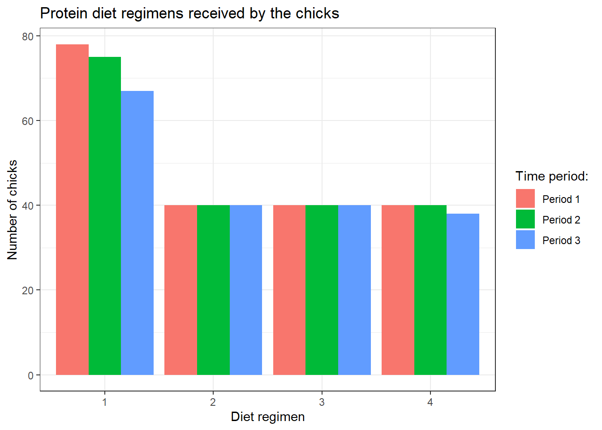
Additionally, we can do bar plot based on another numerical variable in the data. For example, let’s plot diet regiemn based on the weight. Here, instead of geom_bar(), we are going to use geom_col().
chick_data %>%
ggplot(aes(x = Diet, y = weight)) +
geom_col(fill = "steelblue") +
labs(title = "Protein diet regimens based on the weight of chicks",
x = "Diet regimen",
y = "Weight of chicks (gm)") +
theme_bw()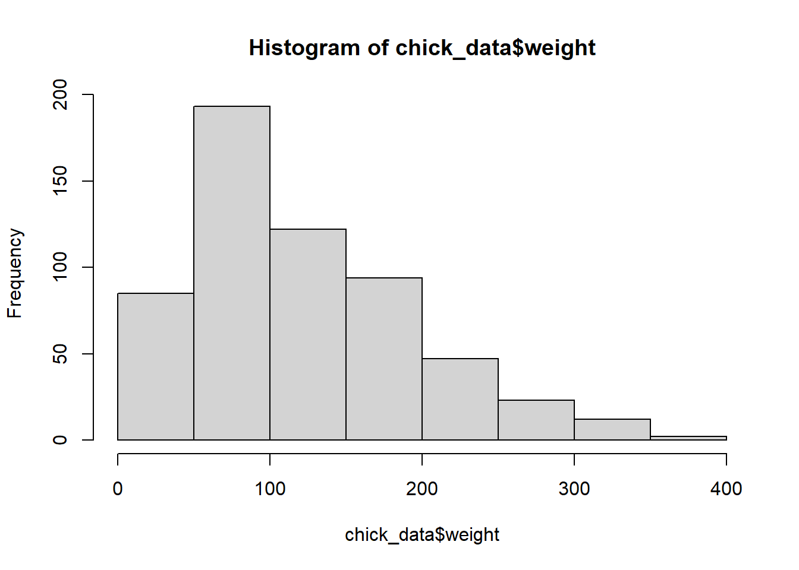
Also, we can add the third variable, Time_group. However, we need to specify position_dodge() in geom_col() to let R knows we want it side by side.
chick_data %>%
ggplot(aes(x = Diet, y = weight, fill = Time_group)) +
geom_col(position = position_dodge()) +
labs(title = "Protein diet regimens based on the weight of chicks and time groups",
x = "Diet regimen",
y = "Weight of chicks (gm)") +
theme_bw()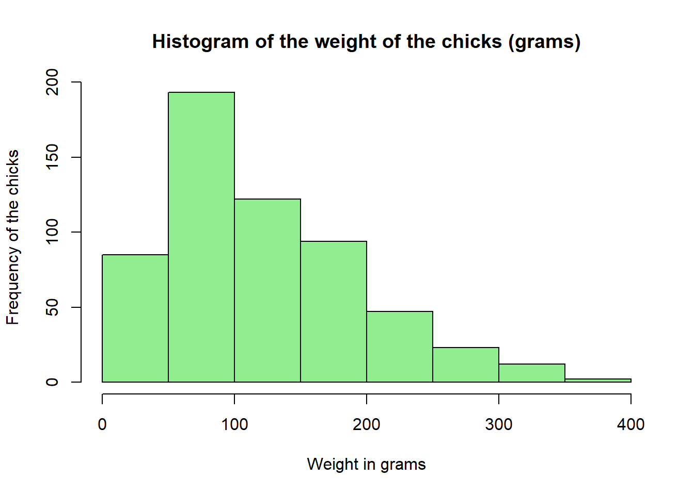
6.4 Histogram
A histogram is used when a variable is numerical. It reflects the frequency distribution of the data.
Let’s do the histogram in base R.
hist(chick_data$weight)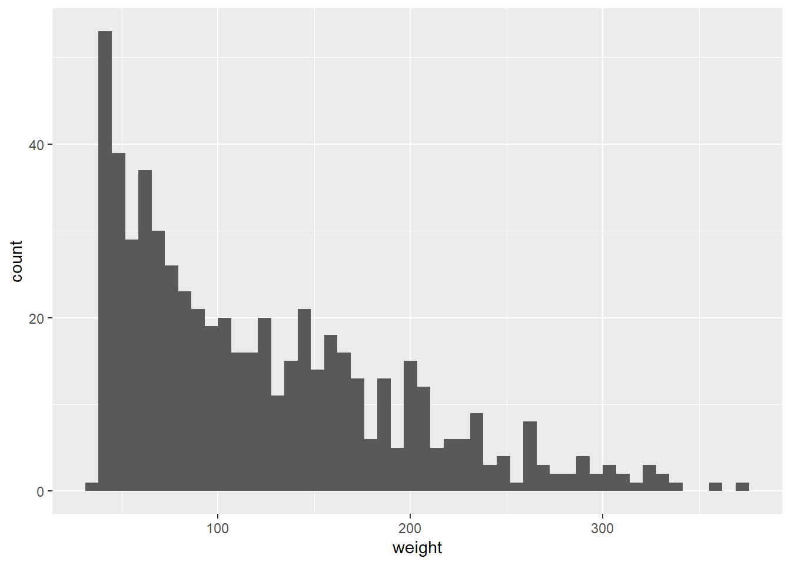
We can see that from the histogram, most chicks in our data weigh around 50-100 grams regardless of time and diet regimen. We can further beautify the histogram by adding a colour, and naming the x-axis and the title. The arguments are similar to the barplot previously.
hist(chick_data$weight,
xlab = "Weight in grams",
ylab = "Frequency of the chicks",
main = "Histogram of the weight of the chicks (grams)",
col = "lightgreen")Next, let’s do the basic histogram in ggplot2 using geom_histogram(). The bins specifies the number of intervals used to group the data. By bins = 50, we divide the data into 50 equally spaced intervals or bins.
chick_data %>%
ggplot(aes(x = weight)) +
geom_histogram(bins = 50)We can add a colour, title, and axis labels, and change the theme.
chick_data %>%
ggplot(aes(x = weight)) +
geom_histogram(bins = 50, fill = "lightgreen") +
labs(title = "Histogram of the weight of the chicks (grams)",
x = "Weight in grams",
y = "Frequency of the chicks") +
theme_minimal()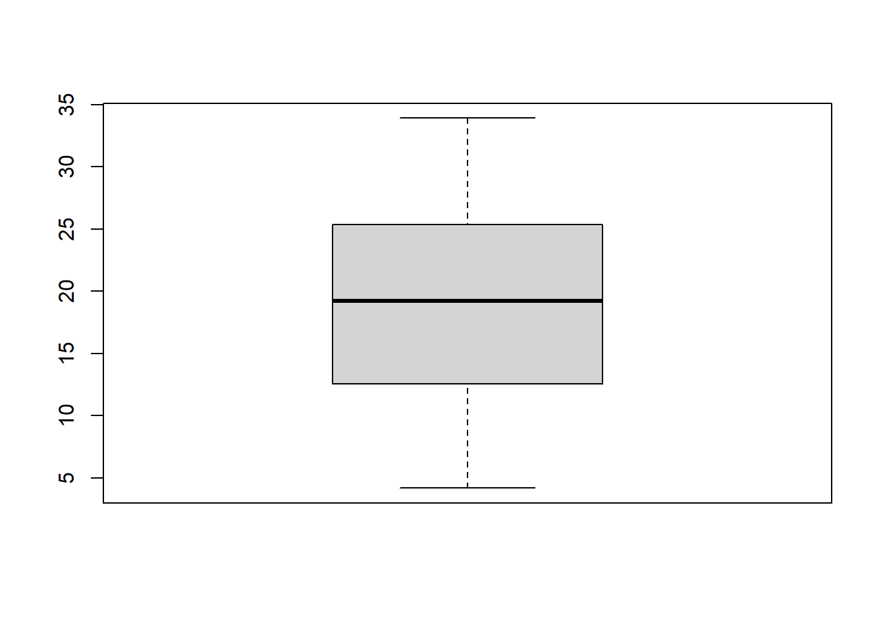
We can also add another variable (a factor variable). Let’s say we want to see the distribution of the chick’s weight across different diet regimens. However, instead of displaying all groups of diet regimens in a single plot, we display it across different plots in rows. facet_grid() specifies which column to use to divide across the rows.
chick_data %>%
ggplot(aes(x = weight)) +
geom_histogram(bins = 20) +
labs(title = "Histogram of the weight of the chicks (grams)",
x = "Weight in grams",
y = "Frequency of the chicks") +
facet_grid(rows = vars(Diet)) +
theme_minimal()Here, we can see more clearly that the weight of the chicks in diet regimen 1 is skewed to the left side, while the weight of the chicks in diet regimen 4 is distributed more uniformly.
6.5 Boxplot
Boxplot is utilised when a variable is numerical. The main use of the boxplot is to display the spread of the data and further identify outliers and extreme values. Outliers are observations that lie far from the majority of the data. An extreme value may not be an outlier, but an outlier is always an extreme value.
Let’s plot the boxplot using base R.
boxplot(tooth_data$len)
We can further beautify the plot.
boxplot(tooth_data$len,
col = "orange",
main = "Boxplot of the tooth length of the guinea pigs")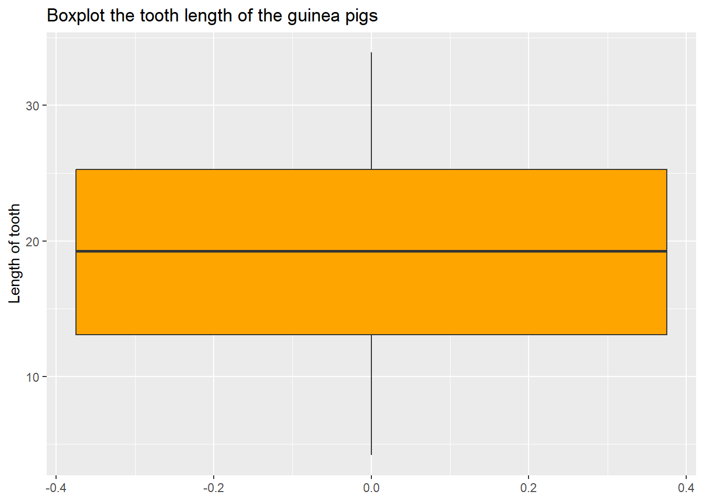
Let’s do a similar boxplot using ggplot2.
tooth_data %>%
ggplot(aes(y = len)) +
geom_boxplot()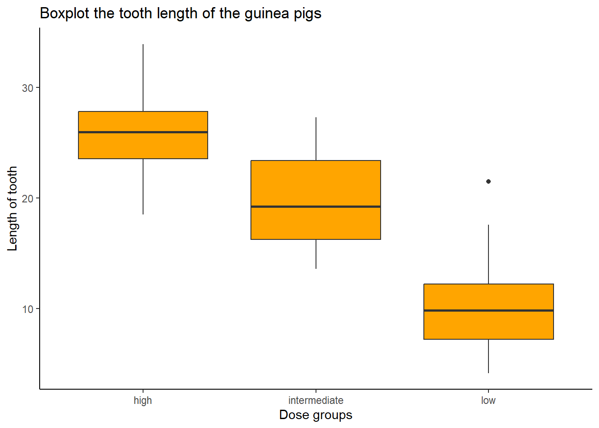
To beautify the plot.
tooth_data %>%
ggplot(aes(y = len)) +
geom_boxplot(fill = "orange") +
labs(title = "Boxplot the tooth length of the guinea pigs",
y = "Length of tooth")We can further divide the boxplots by dose_group.
tooth_data %>%
ggplot(aes(x = dose_group, y = len)) +
geom_boxplot(fill = "orange") +
labs(title = "Boxplot the tooth length of the guinea pigs",
y = "Length of tooth",
x = "Dose groups") +
theme_classic()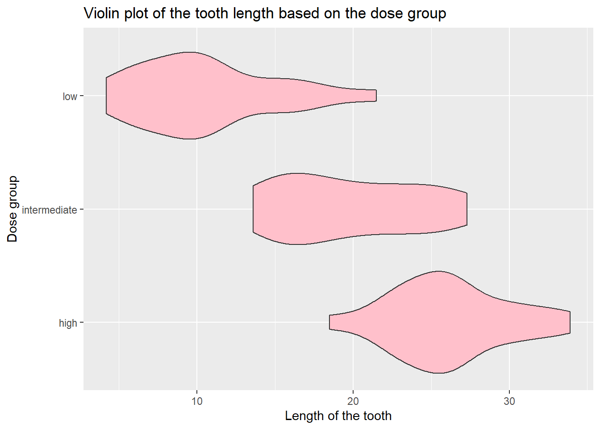
We can see that we may have an outlier in a low-dose group.
6.6 Violin plot
A violin plot allows us to visualise the distribution of the numeric variable according to a factor variable. It is a combination of a boxplot and a density plot. In contrast to the boxplot, the violin plot needs two variables.
There is no function in base R to plot the violin plot. However, we can use ggplot2 to plot the violin plot.
tooth_data %>%
ggplot(aes(x = len, y = dose_group)) +
geom_violin()We can further beautify the plot.
tooth_data %>%
ggplot(aes(x = len, y = dose_group)) +
geom_violin(fill = "pink") +
labs(title = "Violin plot of the tooth length based on the dose group",
y = "Dose group",
x = "Length of the tooth")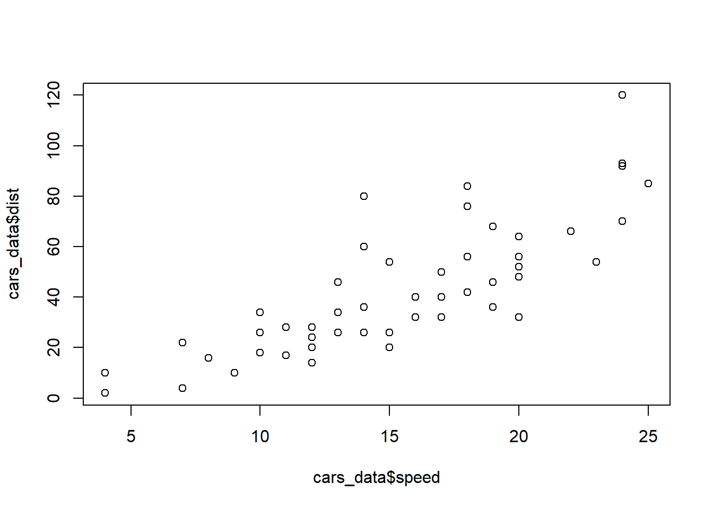
We can further add the boxplot on top of the violin plot.
tooth_data %>%
ggplot(aes(x = len, y = dose_group)) +
geom_violin(fill = "pink", alpha = 0.4) +
geom_boxplot(width = 0.1, color = "red") +
labs(title = "Violin plot of the tooth length based on the dose group",
y = "Dose group",
x = "Length of the tooth") +
theme_bw()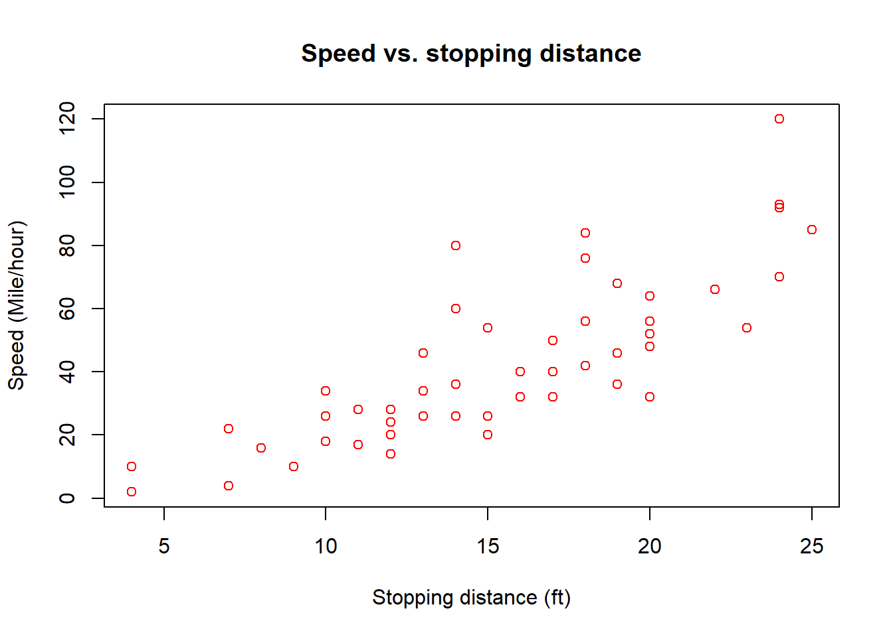
The argument width specifies the width of the boxplot and alpha specifies the colour density.
6.7 Scatter plot
Scatter plots allow us to plot two continuous variables.
Let’s plot a scatter plot using base R. We going to use the last dataset, cars_data.
plot(x = cars_data$speed, y = cars_data$dist)We can see that as the speed increases, the distance taken to stop also increases. Next, to beautify the plot, we name the axis and title, and specify a colour.
plot(x = cars_data$speed,
y = cars_data$dist,
col = "red",
main = "Speed vs. stopping distance",
ylab = "Speed (Mile/hour)",
xlab = "Stopping distance (ft)")Now, let’s do the plot using ggplot2.
cars_data %>%
ggplot(aes(x = dist, y = speed)) +
geom_point()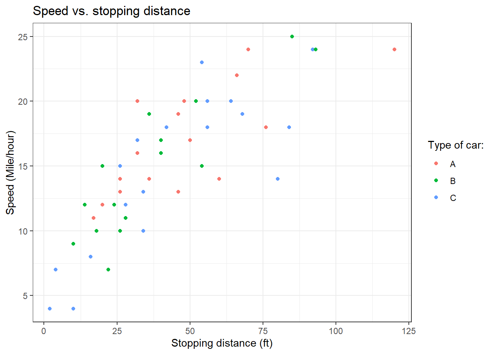
Similarly to the plot in base R, we can further beautify the scatter plot.
cars_data %>%
ggplot(aes(x = dist, y = speed)) +
geom_point(colour = "red") +
labs(title = "Speed vs. stopping distance",
y = "Speed (Mile/hour)",
x = "Stopping distance (ft)") +
theme_bw()
Lastly, we further add another variable.
cars_data %>%
ggplot(aes(x = dist, y = speed, colour = car)) +
geom_point() +
labs(title = "Speed vs. stopping distance",
y = "Speed (Mile/hour)",
x = "Stopping distance (ft)",
colour = "Type of car:") +
theme_bw() 6.8 Chapter summary
In this chapter, we have learned about five different plots.
| Plots | Variables | Application |
|---|---|---|
| Barplot | 1 factor variable | Display the proportion of a factor variable |
| Histogram | 1 numerical variable |
|
| Boxplot | 1 numerical variable |
|
| Violin plot | 1 numerical variable vs. 1 factor variable | Display the frequency distribution of a numerical variable based on another factor variable |
| Scatter plot | 1 numerical variable vs. 1 numerical variable | Display a relationship between two numerical variables |
6.9 Revision
Load and read about
mtcarsdataset from base R.# Load the data data("mtcars") # Read about the data ?mtcarsCreate a histogram using base R for the
mpgvariable using base R. The plot should look like the one below.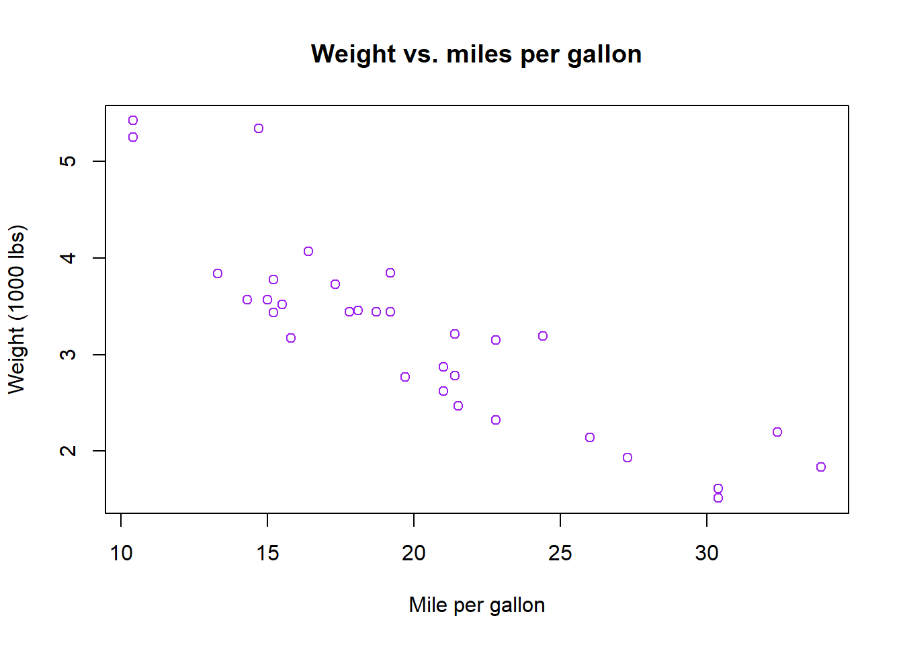
Create a boxplot for the
wtvariable using base R. The plot should look like the one below.
Create a scatter plot for
mpgvs.wtvariables using base R. The plot should look like the one below.plot(mtcars$mpg, mtcars$wt, col = "purple", main = "Weight vs. miles per gallon", xlab = "Mile per gallon", ylab = "Weight (1000 lbs)")
Load and read about
diamondsdata from theggplot2package.# Load the packages library(tidyverse) # Load the data data("diamonds") # Read about the data ?diamondsCreate a barplot of the
colorvariable usingggplot2. The plot should look like the one below.Create a scatter plot between
caratandpriceusingggplot2. The plot should look like the one below.
Create a violin plot between
priceandcolorand further separate it bycutThe plot should look like this.